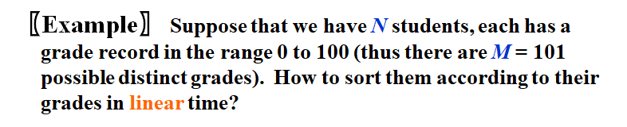
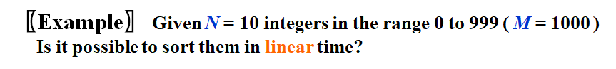
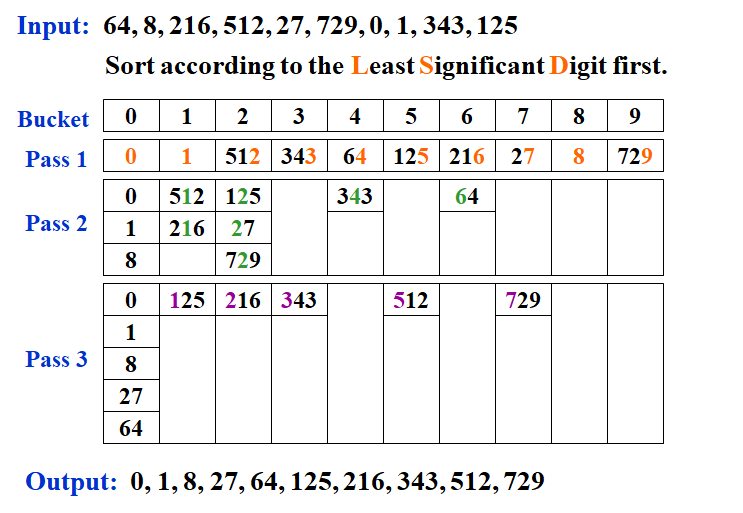

WEEK 13
7.7 Quicksort
- the fastest known sorting algorithm in practice
Algorithm
void Quicksort( ElementType A[ ], int N )
{
if (N < 2) return;
pivot = pick any element in A[ ];
Partition S = { A[ ] \ pivot } into two disjoint sets:
A1 = { a in S | a <= pivot } and A2 = { a in S | a >= pivot };
A = Quicksort(A1, N1) and { pivot } and Quicksort(A2, N2);
}
- The pivot is placed at the right place once and for all.
- 要研究的问题是如何选取枢纽元和如何划分
Picking the Pivot
A Wrong Way
- Pivot = A[ 0 ]
- The worst case : A[ ] is presorted, quicksort will take \(O(N^2)\) time to do nothing
A Safe Maneuver
- Pivot = random select from A[ ]
- random number generation is expensive
Median-of-Three Partitioning
- Pivot = median(left, center, right)
- Eliminates the bad case for sorted input and actually reduces the running time by about 5%.
Partitioning Strategy
- 当\(i\)在\(j\)的左边时，我们将\(i\)右移，移过那些小于枢纽元的元素，并将\(j\)左移，移过那些大于枢纽元的元素
- 当\(i\)和\(j\)停止时，\(i\)指向一个大元素而\(j\)指向一个小元素，如果\(i\)在\(j\)的左边，那么将这两个元素互换
- 重复该过程直到\(i\)和\(j\)彼此交错为止
- 划分的最后一步是将枢纽元与\(i\)所指向的元素交换
- 如果\(i\)和\(j\)遇到等于枢纽元的键值，就让\(i\)和\(j\)都停止，因为若都不停止\(T(N)=O(N^2)\)
- There will be many dummy swaps, but at least the sequence will be partitioned into two equal-sized subsequences.
Small Arrays
- Quicksort is slower than insertion sort for small \(N(\leq 20)\).
- Cutoff when \(N\) gets small and use other efficient algorithms (such as insertion sort).
Implementation
void Quicksort( ElementType A[ ], int N )
{
Qsort( A, 0, N-1 );
/*A:the array*/
/*0:Left index*/
/*N–1:Right index*/
}
/* Return median of Left, Center, and Right */
/* Order these and hide the pivot */
ElementType Median3( ElementType A[ ], int Left, int Right )
{
int Center = ( Left+Right )/2;
if ( A[ Left ] > A[ Center ] )
Swap( &A[ Left ], &A[ Center ] );
if ( A[ Left ] > A[ Right ] )
Swap( &A[ Left ], &A[ Right ] );
if ( A[ Center ] > A[ Right ] )
Swap( &A[ Center ], &A[ Right ] );
/*Invariant: A[ Left ] <= A[ Center ] <= A[ Right ]*/
Swap( &A[ Center ], &A[ Right-1 ] ); /*Hide pivot*/
/*only need to sort A[ Left+1 ] … A[ Right–2 ]*/
return A[ Right-1 ]; /*Return pivot*/
}
void Qsort( ElementType A[ ], int Left, int Right )
{
int i, j;
ElementType Pivot;
if ( Left + Cutoff <= Right )
{ /*if the sequence is not too short*/
Pivot = Median3( A, Left, Right ); /*select pivot*/
i = Left;
j = Right – 1; /*why not set Left+1 and Right-2?*/
for( ; ; )
{
while ( A[ ++i ] < Pivot ) { } /*scan from left*/
while ( A[ --j ] > Pivot ) { } /*scan from right*/
if ( i < j )
Swap( &A[ i ], &A[ j ] ); /*adjust partition*/
else break; /*partition done*/
}
Swap( &A[ i ], &A[ Right-1 ] ); /*restore pivot */
Qsort( A, Left, i-1 ); /*recursively sort left part*/
Qsort( A, i+1, Right ); /*recursively sort right part*/
} /*end if - the sequence is long*/
else /*do an insertion sort on the short subarray*/
InsertionSort( A+Left, Right-Left+1 );
}
Note : If set i = Left+1 and j = Right-2, there will be an infinite loop if A[i] = A[j] = pivot.
Analysis
-
\(i\) is the number of the elements in \(S_1\).
-
The Worst Case $$ T(N)=T(N-1)+cN $$
$$ T(N-1)=T(N-2)+c(N-1) $$
$$ \cdots $$
$$ T(2)=T(1)+2c $$
$$ T(N)=T(1)+c\sum^N_{i=2}i=O(N^2) $$
- The Best Case $$ T(N)=2T(N/2)+cN $$
$$ \frac{T(N)}{N}=\frac{T(N/2)}{N/2}+c $$
$$ \frac{T(N/2)}{N/2}=\frac{T(N/4)}{N/4}+c $$
$$ \cdots $$
$$ \frac{T(2)}{2}=\frac{T(1)}{1}+c $$
$$ \frac{T(N)}{N}=\frac{T(1)}{1}+c\log N\frac{T(N)}{N}=\frac{T(1)}{1}+c\log N $$
$$ T(N)=cN\log N+N=O(N\log N) $$
-
The Average Case
-
Assume the average value of \(T( i )\) for any \(i\) is \(\frac{1}{N}\left[\sum^{N-1}_{j=0}T(j)\right]\) $$ T(N)=\frac{2}{N}\left[\sum^{N-1}_{j=0}T(j)\right]+cN $$
$$ NT(N)=2\left[\sum^{N-1}_{j=0}T(j)\right]+cN^2 $$
$$ (N-1)T(N-1)=2\left[\sum^{N-2}_{j=0}T(j)\right]+c(N-1)^2 $$
$$ NT(N)-(N-1)T(N-1)=2T(N-1)+2cN-c $$
$$ NT(N)=(N+1)T(N-1)+2cN $$
$$ \frac{T(N)}{N+1}=\frac{T(N-1)}{N}+\frac{2c}{N+1} $$
$$ \frac{T(N-1)}{N}=\frac{T(N-2)}{N-1}+\frac{2c}{N} $$
$$ \cdots $$
$$ \frac{T(2)}{3}=\frac{T(1)}{2}+\frac{2c}{3} $$
$$ \frac{T(N)}{N+1}=\frac{T(1)}{2}+2c\sum^{N+1}_{i=3}\frac{1}{i} $$
$$ T(N)=O(N\log N) $$
Quickselect
- 查找第\(K\)最大(最小)元
/*Places the kth sma11est element in the kth position*/
/*Because arrays start at 0, this will be index k-1*/
void Qselect(ElementType A[ ], int k, int Left, int Right)
{
int i, j;
ElementType Pivot;
if (Left + Cutoff <= Right)
{
Pivot = Median3(A, Left, Right);
i = Left;
j = Right-1;
for( ; ; )
{
while(A[ ++i ] < Pivot){ }
while(A[ --j ] > Pivot){ }
if(i < j)
Swap(&A[ i ], &A[ j ]);
else
break;
}
Swap(&A[ i ], &A[ Right-1 ]); /*Restore pivot*/
if(k <= i)
Qselect(A, k, Left, i-1);
else if (k > i+1)
Qselect(A, k, i+1, Right);
}
else /*Doan insertion sort on the subarray*/
InsertionSort(A+Left, Right-Left+1);
}

正确答案是D
7.8 Sorting Large Structures
- Swapping large structures can be very much expensive.
- Add a pointer field to the structure and swap pointers instead – indirect sorting. Physically rearrange the structures at last if it is really necessary.
- Table Sort
7.9 A General Lower Bound for Sorting
[Theorem] Any algorithm that sorts by comparisons only must have a worst case computing time of \(\Omega(N\log N)\).
- When sorting \(N\) distinct elements, there are \(N!\) different possible results.
- Thus any decision tree must have at least \(N!\) leaves.
- If the height of the tree is \(k\), then \(N! \leq 2^{k-1}\rarr k\geq\log(N!)+1\)
- Since \(N!\geq (N/2)^{N/2}\) and \(\log_2N!\geq(N/2)\log_2(N/2) = \Theta(N\log_2N )\)
- Therefore \(T(N)=k\geq c\cdot N\log_2 N\)
7.10 Bucket Sort

Algorithm
{
initialize count[ ];
while(read in a student’s record)
insert to list count[stdnt.grade];
for(int i = 0; i < M; i++)
{
if(count[i]) output list count[i];
}
}
7.11 Radix Sort


- \(T=O(P(N+B))\) where \(P\) is the number of passes, \(N\) is the number of elements to sort, and \(B\) is the number of buckets.
MSD(Most Significant Digit) Sort and LSD(Least Significant Digit) Sort


- 稳定的排序算法：冒泡排序、插入排序、归并排序、基数排序
- 不稳定的排序算法：选择排序、快速排序、希尔排序、堆排序